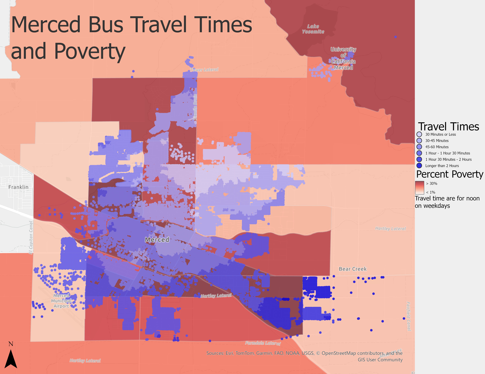
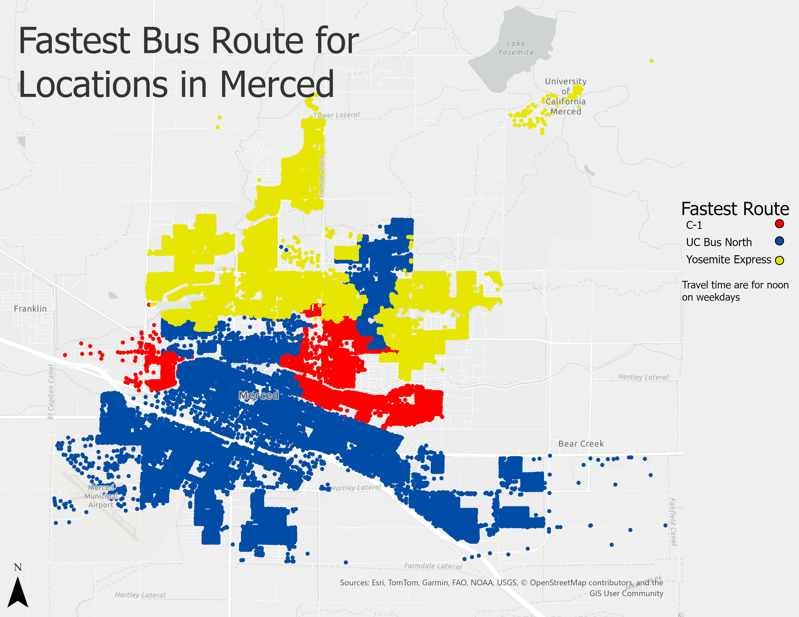
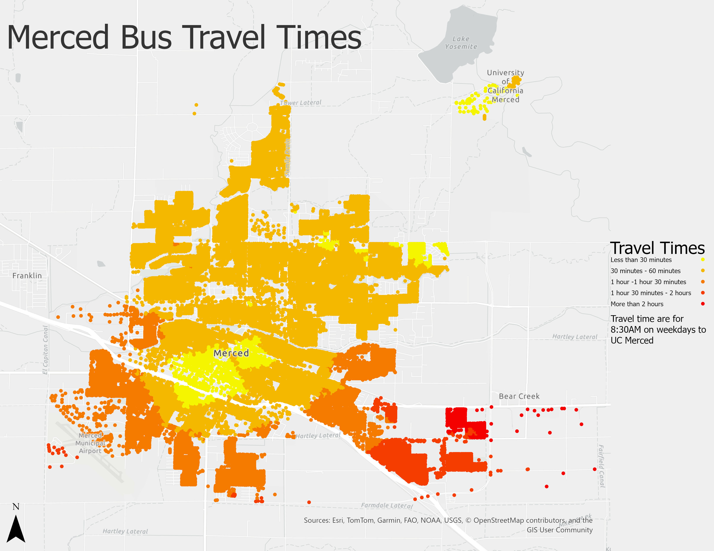
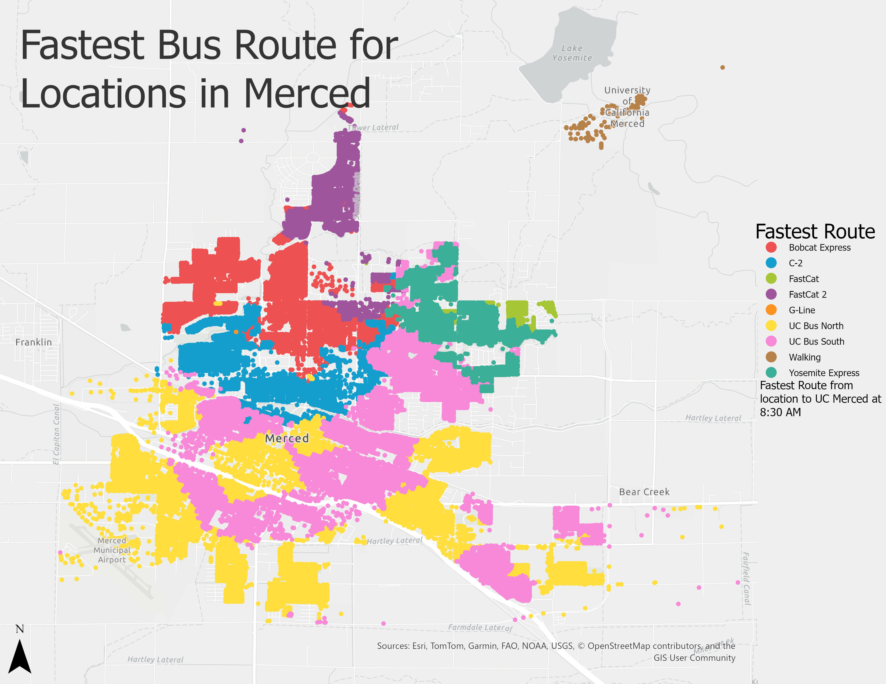

Merced, California has two public transportation systems, The Bus, operated by Merced County and CatTracks, operated by UC Merced. If you are trying to travel to or from the UC Merced campus, you have to choose to take the UC route operated by The Bus or take one of the routes operated by CatTracks. However, if you try to use Google Maps to plan a trip to or from Campus, you will only see the UC route, none of the CatTracks routes. If you want to see the schedule of the CatTracks routes, you need to use their tracker or read the published schedule. As a user of public transit, this issue was frustrating. In part, I wanted to build a system where I could plan trips with both systems included. However, I also noticed that some areas (Yosemite Ave. and R St. housing developments) are better served than others (downtown Merced, anything south of Hwy. 99) and I wanted to analyze that.
I took this project as part of MIST 132, Geographic Information Systems Analysis for Management. As part of the class, we had a final project involving using ArcGIS to analyze an issue in the community. Before I actually started doing the code for the project, I had done a lot of thinking on what a good process would be to do this kind of analysis. With the benefits of hindsight, I don't know how valuable this kind of prethinking turned out to be for this kind of project. When I started coding, the thinking gave me a clear path forward for the entire time, but I also think some of my ideas on how to implement things proved to be the incorrect way forward.
I planned to model a bus trip as walking to a starting station, riding the bus until a destination station, then walking the rest of the way. To compute times for the walking portion, I needed the street network. For each bus route, I also needed to know the schedule to know the time it would take to actually get to the bus. There are a number of approaches to getting and representing this data. ArcGIS's most primitive geographic datatypes are the node, the line and the polygon, but creating relationships between nodes in a way that represents a street network takes much more work. While ArcGIS doesn't natively support networks, wanting to analyze a network like the street network is a pretty important problem, so ESRI sells the Network Analyzer addon. My school does have a license to this addon, but I looked at the featureset and I ultimately decided that it was too difficult to get data into it and process it. It also doesn't address where the data can come from. Based on my research, I found OpenStreetMap provides public domain map data, which includes street networks. There is also an established ecosystem of software that can work with OpenStreetMap data, which I would end up using. To source the bus route data, there are open standards transit agencies can use to publish both schedule information and real time location data for apps to use. Unfortunately, Cattracks buses are not published in this system (hence why they don't show up in Google Maps). As far as I am aware, ESRI doesn't provide a data structure that would suit bus schedule data, so I concluded that I would need to use a programming language outside of ESRI's own ModelBuilder.
I decided to write my analysis program as a ESRI python toolkit. This gives it the same functionality as ArcGIS's own geoprocessing tools which allows you to easily create maps in ArcGIS based on the analysis. In order for ArcGIS to recognize your program, you need to be working in ArcGIS's own python environment. This means using ArcGIS's own package manager instead of command line tools. This would later cause problems. After copying the default ArcGIS repository, I set up the necessary ArcGIS functions. Some of the functions provide metadata, isLicenced confuses me, if a business starts selling plaintext python files, a "return true" at the top of that function bypasses any potential protection pretty easily. The getParameterInfo and updateParameters functions are where most of my project's interaction with ArcGIS live. I did this section first, which with hindsight may have been a poor choice. In some sense I needed to have some way to get data into the program, however, I probably set up validation prematurely.
Next, I transcribed each bus schedule. I created an object for "routes" which contained some metadata about the routes (operated by CatTracks or Merced County, runs on weekends, weekdays of both) then an array that contained a list of "stops". Each of the stops contains the OpenStreetMap id of the bus stop and contains every time the bus stops there, marked in minutes after midnight (0 is midnight, 600 is 10AM, etc.) For each route, I downloaded the PDF, found the OSM ID of the corresponding stop, then copied the schedule over. I think this task is right on the boundary of being practical to automate. In the end, there were 28 routes, spread about two different formats of PDFs. I can imagine a few ways to do this kind of automation, but by doing it manually I was able to guarantee accuracy and maybe have saved myself time over automating it.
I likely would not have been able to do this project without OSMnx, a python package that makes downloading and analyzing OpenStreetMap data much easier. OSMnx creates street networks that can be processed by NetworkX, a python package that provides data structures for graphs like our street network. OpenStreetMap also provides data on buildings and OSMnx provides utilities to download these features. These features are used as the departure and destination for the analysis. I store and process these features, as well as many of the intermediate products in GeoPandas. Geopandas is a library for storing geographic information with a similar interface to Pandas. I have used Pandas on previous projects, so Geopandas was familiar to me.
First, the program either loads or downloads the street network. OSMnx provides built in functions to achieve this, so this was very easy to implement. Next, the program starts by either loading or downloading the collection of features. The collection of features is comprised of all of the OpenStreetMap objects that are either labeled as buildings or have addresses. While this method might result in some buildings being excluded, either due to OpenStreetMaps being out of date or mislabeled, most buildings are properly labeled and there are still enough buildings to create a meaningful analysis.
Next, the program precomputes the walking distance from each location to each bus stop. My analysis ended up containing around 30,000 buildings, and there were about 50 bus stops, so that involves calculating 1,500,000 walking distances. Even with multithreading on my 6 core Ryzen 5 5600H, each bus stop took about 30 minutes to calculate walking distances for, which would have required I have my computer on for about a full day. If there were an error or something happened to my computer, the entire process would have restarted unless I spent time to write out error handling and recovery code. Instead, I enlisted my friend who has a 8 core Ryzen 9 6900HS. On their computer, it took 9 hours.
Now we actually do the analysis. For every route, I go through each stop as a possible start, then go through each stop as a possible destination, then add the time it would take to walk to the starting stop, wait for the bus, ride the bus, then walk from the destination stop to the destination, then find the time from the fastest pair of origin stops and destinations. Going through all of the routes takes about 40 minutes. In the end, I have the fastest times it would take to go between a select point and every other place in Merced for every bus route. I compute which route is fastest and how long the fastest route takes. I save that to a Apache feather file and a GeoJSON. I intended to have the tool finish and add the data as a layer in ArcGIS, but I could not figure out how to create a layer to add to the map, so currently you have to set all the parameters in ArcGIS, but you then have to load an external file into ArcGIS to create the map.
This map shows how long it takes to travel from UC Merced to points in Merced at noon. You can see it can take almost 2 hours to get to some of southern Merced.
The same map with US census poverty data overlayed. The data could help support a hypothesis that accessibility to educational institutions may be related to poverty.
This map shows which bus route is fastest to travel from UC Merced to points in Merced at noon. You can note that only three of the bus routes are fastest at this point. You also see how critical the UC bus is, as it is the fastest mode of transportation for all of south Merced
This map shows how long it takes to travel to UC Merced from points to Merced at 8:30AM. Travel times are faster than leaving at noon. Most of Merced can get to the university within an hour, although few places can get to the university in less than 30 minutes.
This map shows which bus route is fastest to UC Merced from points to Merced at 8:30AM. You can see a lot more bus routes can be the fastest route to campus.
Don't put a python project in a cloud folder. When I started this project, I figured I should put the environment in my school's cloud drive. I could then work on it on all of my computers and it would all by synced up. This is not a good idea. Python environments create thousands of files. For a number of reasons, my school's cloud drive has very low bandwidth of uploading or downloading thousands of files at a time, so doing this caused endless headaches as it tried to keep the environment in sync. In the end, I put up with this and could only use the environment on one computer (defeating the entire purpose of putting it in the cloud drive, but I did finish.) In general, don't put python environments anywhere weird. I moved ArcGIS (and its python interpreter) to my hard drive, and it also slowed down many processes.
Pick data formats that are easier to work with. I spent a lot of time in this project juggling data formats. OpenStreetMap has a number of formats for storing the features on their map. I figured I would try to import the data into ArcGIS to try to get a better visualization of it. There are many ways to get data into ArcGIS, some formats can be directly imported as layers, some formats can be added using built-in geoprocessing tools and some use ArcGIS's data connector plugin. This was the only addon that wasn't installed alongside the rest of my ArcGIS, so I had to get help with getting an installer to get the plugin. In the end, the plugin took an hour to import the data from OpenStreetMap's XML format, but it didn't open correctly, so I didn't get any insights from that. I often had to choose non-ESRI native data formats because they were better documented, and worked better. My hope was that adding the finished layers to the map would be easy because I was writing the program as a geoprocessing toolkit. However, I simply couldn't figure out how to convert GeoPandas's Geodataframes into an ArcGIS layer. ESRI has "geo-spatially enabled dataframes", but they were poorly documented so I wasn't able to figure out how to use them. In the end, I had the program output a GeoJSON file which was relatively easy to import. Apache Feather was also a really useful format; it was very fast to export and import from compared to the GeoDatabase format and GeoJSON. ESRI having better documentation on how to have GeoPandas interface with ArcGIS could help. It's possible that documentation like that exists, but I never found it.
RAPIDS: RAPIDS is a data science library that utilizes CUDA to speed up popular scientific python packages. In my project, RAPIDS' cuGraph and cuSpatial likely would have reduced the compute time needed to complete an analysis. I did try to experiment with RAPIDS, but RAPIDS requires Linux and I have not been able to get CUDA drivers to install on Linux ever. I also don't know how much speed the acceleration would provide. NVIDIA claims large speedups of 10x or 6x, but it's possible my GPU's 4GB of VRAM may cause the process to be slower than using my CPU's 32GB of normal RAM. I haven't been able to test this, so I can't support one conclusion or the other.
Animation: From my personal experience using Merced's transit systems, the time of day is a big factor in how long it takes to get somewhere. A lot of routes take longer than an hour, so with only one bus on the route, leaving at 10AM and 10:10AM might result in having to wait an extra hour for a bus to come. I think creating an animated map based on the travel times at different times of day would be very interesting and may reveal trends that may not be apparent looking at individual maps. Two problems exist: Firstly, each analysis takes 40 minutes to complete. If I wanted to have an animation showing the map at 10 minute intervals from 6am to midnight, that require 6 maps/hour * 18 hours * 40 minutes/map = 3 full days. I would need to further optimize the program to make creating such an animation possible. I have some ideas on how I could do that, but I would need to test each one and see what works best. The second problem is much smaller; I don't know how to use ArcGIS to make such an animation. I have seen it done, so I know it's possible, I would just have to learn how.
Improving the model: My analysis is based on a model that has some areas that could be improved. For example, the model assumes people walk along streets at a constant rate of 5 kilometers per hour. I don't know how accurate this estimation is. I walk faster than 5km/hr but Merced also has many stoplights where I have to wait to cross, so 5km/hr may be a good measure of my average walking speed, I would have to test it. One flaw I would consider pretty significant is that the model doesn't allow transfers between routes. A person in South Merced is more likely to get to the university by taking a South Merced bus route to the Merced Transpo (The Bus's central depot) and then transfer to the UC Route than to walk to the Transpo and take the UC route. I would have to think about how to implement this, but I think a very valid criticism of my analysis would be this omission.